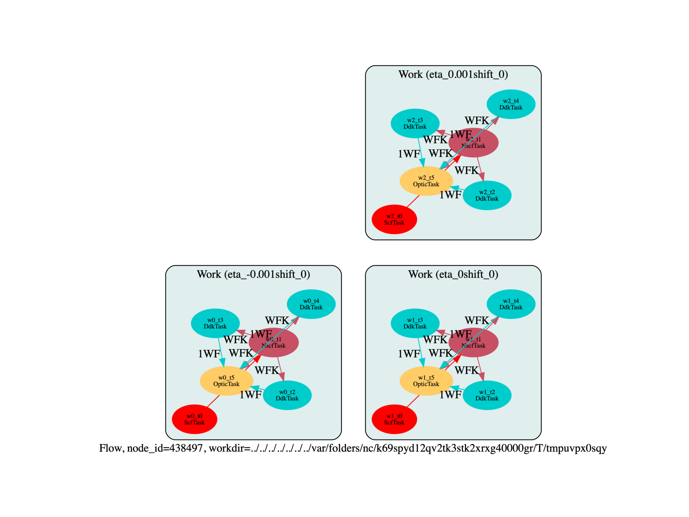

Note
Click here to download the full example code
This script shows how to perform a Raman calculation with excitonic effects included with the BSE formalism.
from __future__ import division, print_function, unicode_literals, absolute_import
import sys
import os
import numpy as np
import abipy.abilab as abilab
import abipy.data as abidata
import abipy.flowtk as flowtk
def build_flow(options):
# Get the unperturbed structure.
pseudos = abidata.pseudos("14si.pspnc")
base_structure = abidata.structure_from_ucell("Si")
ngkpt = [6, 6, 6]
etas = [-.001, 0, +.001]
ph_displ = np.reshape(np.zeros(3*len(base_structure)), (-1,3))
ph_displ[0,:] = [+1, 0, 0]
ph_displ[1,:] = [-1, 0, 0]
# Build new structures by displacing atoms according to the phonon displacement
# ph_displ (in cartesian coordinates). The Displacement is normalized so that
# the maximum atomic diplacement is 1 Angstrom and then multiplied by eta.
modifier = abilab.StructureModifier(base_structure)
displaced_structures = modifier.displace(ph_displ, etas, frac_coords=False)
# Initialize flow. Each workflow in the flow defines a complete BSE calculation for given eta.
if not options.workdir:
options.workdir = os.path.basename(__file__).replace(".py", "").replace("run_","flow_")
flow = flowtk.Flow(options.workdir, manager=options.manager)
# Generate the different shifts to average
ndiv = 1
shift1D = np.arange(1, 2*ndiv+1, 2) / (2 * ndiv)
all_shifts = [[x, y, z] for x in shift1D for y in shift1D for z in shift1D]
for structure, eta in zip(displaced_structures, etas):
for ishift,shift in enumerate(all_shifts):
flow.register_work(raman_work(structure, pseudos, ngkpt, shift),
workdir="eta_" + str(eta) + "shift_" + str(ishift))
return flow
def raman_work(structure, pseudos, ngkpt, shiftk):
# Generate 3 different input files for computing optical properties with Optic.
global_vars = dict(
istwfk="*1",
paral_kgb=0,
ecut=8,
nstep=200,
diemac=12,
ixc=7,
chksymbreak=0,
#accesswff=3
)
multi = abilab.MultiDataset(structure, pseudos=pseudos, ndtset=5)
multi.set_vars(global_vars)
multi.set_kmesh(ngkpt=ngkpt, shiftk=shiftk)
# GS run
multi[0].set_vars(
tolvrs=1e-8,
nband=20,
nbdbuf=2,
)
# Note kptopt 2 in NSCF and DDK
# In principle kptopt 2 is needed only in DDK.
# one could do a first NSCF run with kptopt 1, reread with kptopt 2 and enter DDK...
# NSCF run
multi[1].set_vars(
iscf=-2,
nband=40,
nbdbuf=5,
kptopt=2,
tolwfr=1.e-12,
)
# DDK along 3 directions
# Third dataset : ddk response function along axis 1
# Fourth dataset : ddk response function along axis 2
# Fifth dataset : ddk response function along axis 3
for idir in range(3):
rfdir = 3 * [0]
rfdir[idir] = 1
multi[2 + idir].set_vars(
iscf=-3,
nband=40,
nbdbuf=5,
nstep=1,
nline=0,
prtwf=3,
kptopt=2,
nqpt=1,
qpt=[0.0, 0.0, 0.0],
rfdir=rfdir,
rfelfd=2,
tolwfr=1.e-12,
)
scf_inp, nscf_inp, ddk1, ddk2, ddk3 = multi.split_datasets()
ddk_inputs = [ddk1, ddk2, ddk3]
work = flowtk.Work()
scf_t = work.register_scf_task(scf_inp)
nscf_t = work.register_nscf_task(nscf_inp, deps={scf_t: "DEN"})
ddk_nodes = []
for inp in ddk_inputs:
ddk_t = work.register_ddk_task(inp, deps={nscf_t: "WFK"})
ddk_nodes.append(ddk_t)
optic_input = abilab.OpticInput(
broadening=0.002, # Value of the smearing factor, in Hartree
domega=0.0003, # Frequency mesh.
maxomega=0.3,
scissor=0.000, # Scissor shift if needed, in Hartree
tolerance=0.002, # Tolerance on closeness of singularities (in Hartree)
num_lin_comp=6, # Number of components of linear optic tensor to be computed
lin_comp=(11, 12, 13, 22, 23, 33), # Linear coefficients to be computed (x=1, y=2, z=3)
num_nonlin_comp=0 # Number of components of nonlinear optic tensor to be computed
#nonlin_comp=(123, 222),
)
optic_t = flowtk.OpticTask(optic_input, nscf_node=nscf_t, ddk_nodes=ddk_nodes)
work.register(optic_t)
return work
# This block generates the thumbnails in the Abipy gallery.
# You can safely REMOVE this part if you are using this script for production runs.
if os.getenv("READTHEDOCS", False):
__name__ = None
import tempfile
options = flowtk.build_flow_main_parser().parse_args(["-w", tempfile.mkdtemp()])
build_flow(options).plot_networkx(with_edge_labels=False, tight_layout=True)
@flowtk.flow_main
def main(options):
"""
This is our main function that will be invoked by the script.
flow_main is a decorator implementing the command line interface.
Command line args are stored in `options`.
"""
return build_flow(options)
if __name__ == "__main__":
sys.exit(main())
Total running time of the script: ( 0 minutes 0.193 seconds)